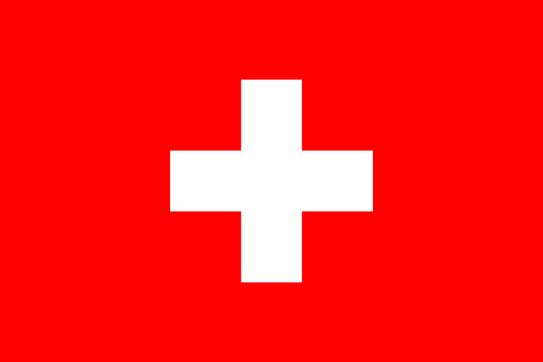

Crans Montana
Valais, Switzerland
The two neighboring resorts of Crans and Montana are situated at an altitude of 1500m on a sun-drenched plateau high above the Rhone Valley. Together they form one of the biggest holiday destinations in the Valais.
These twin towns have much to offer, including an impressive view of the chain of mountain peaks from the Matterhorn to Mont Blanc and a particularly wide programme of activities all year round.
Idyllic mountain village or alpine town? Crans-Montana embodies both and combines all the comforts of a modern holiday resort with an expansive natural landscape and panoramic views of the Valais Alps. The modern side of Crans-Montana offers the most extensive alpine shopping for miles around. It also boasts a renowned cultural and congress centre; and a wide range of accommodation. As a venue for major sporting events, and with a reputation as a golfing Mecca, Crans-Montana draws visitors from all over the world.
Commune with nature in this family-friendly resort, where you can enjoy five swimming lakes; walks through aromatic mountain forests along an extensive network of footpaths; and cosy fondue evenings in rustic inns.
Winter
The ski slopes stretch from the high plateau up to the Plaine Morte Glacier at 3000 m. Directly beyond the edge of the forest the pistes are broad and open, ideal for beginners and deep-snow skiers. Advanced skiers will take the chairlift to La Toula to find a really challenging descent. Particularly popular are the broad carving pistes and the valley descent down the Piste Nationale which, at 12 km, is the longest in the region.
In Winter the golf courses become a paradise for cross-country skiers and hikers. In addition to classic cross-country ski trails, there is also an extra piste especially for skaters.
| Altitude | Ski slopes | Ski lifts |
|---|---|---|
| 1510m - 2927m | 140km | 19 |
Summer
In addition to well-known sports like hiking, tennis and squash, Crans-Montana has facilities for canyoning, mountain climbing, water skiing and paragliding. The attractive skiing areas of the Plaine Morte glacier plateau are also ideal for summer hiking. Particular summer favourites are the five swimming lakes right next to the village.
Crans-Montana has a long golfing tradition. The 18-hole Severiano Ballesteros Golf Course with its breath-taking views is situated on the high plateau of Crans. The international elite meet here every year for golfing tournaments.
| Hiking | Mountain biking | Ski lifts | Golf |
|---|---|---|---|
| 280km | 140km | 3 | 4 courses |
Events
Art
Vision Art Festival
August
This festival is one of a kind. Think street art meets mountains. Set in Crans Montana, in the canton Valais, high in the Swiss Alps, it gathers together various artists to transform dull and lifeless concrete walls and buildings into works of art - Full story
Golf
Omega European Masters
August
This festival is one of a kind. Think street art meets mountains. Set in Crans Montana, in the canton Valais, high in the Swiss Alps